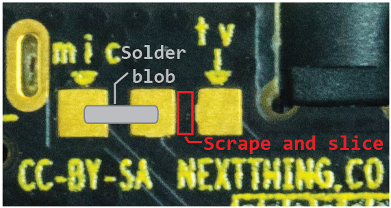
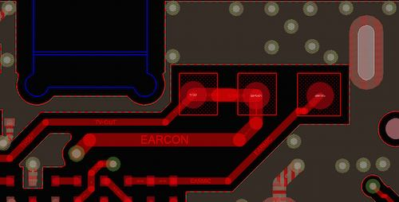

マイクとオーディオ入力
Microphone and Audio Input
If you want to use audio input, you might find it easiest to use the pins on pins 10 and 12 on header U14. However, if you want to use the 1/8" TRRS connector, you can modify the CHIP board to replace the composite video connection with an audio input connection.
If you look at the bottom of CHIP with the audio and USB jacks pointed up, you'll see three small contact pads to the left of the audio jack. The left pad has a small label of mic and the right pad has a tv label. Between the middle pad and the tv pad is a trace that can be carefully cut with an Exacto or utility razor blade. Once that is cut (check with a volt or continuity meter), you can put a solder blob between the mic and middle pad. Now the outer ring can be used for audio input.
音声入力を使用する場合に於いて、最も簡単な方法として、ヘッダU14上の10,12のピンを使用することを見つけるかもしれません。 しかし、1/8" TRRSコネクタを使用したいのであれば、コンポジットビデオ接続をオーディオ入力接続として使用するように、CHIPボードを変更することができます。
CHIPの底を、オーディオジャックとUSBジャックに注目して見てみると、オーディオジャックの左に、３つの小さな接触パッドがある事に気付くでしょう。 左のパッドは小さなmicラベルを持ち、右のパッドはtvラベルを持っています。 中央のパッドとtvパッドの間にあるトレースは、精密ナイフやカッター刃を用いて、慎重に切断することができます。 それを切断すれば（電圧や導通テスタで確認してください）、micパッドと中央パッドを半田で接続することが出来ます。 そうすれば、TRRSジャックを音声入力のために使用することが出来るようになります。

As another reference, if you had X-ray vision and you were looking from the top of CHIP, you'd see a trace like this:
もう一つの方法、 あなたに透視能力が備わっている場合は CHIPを上から見て、このようなトレースを参照してくださいね。

If the composite video connection is needed again, just reverse the process: desolder the connection between mic and the middle pad, then solder a bridge between tv and the middle pad.
再度コンポジットビデオ接続が必要になった場合には、真逆の手順を辿ります。
- micパッドと中央パッドの間の半田を取り除き、
- tvパッドと中央パッドの間を半田で接続します。